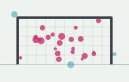
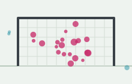
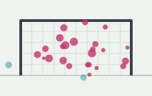

Miguel Navarro Castro
PhD student in Mathematics, University of Seville
University of Seville, Spain
I am a PhD student in Mathematics at the University of Seville, advised by María José Jiménez and Elena Camacho Aguilar. I work where applied topology meets developmental biology.
My thesis uses chromatic topological data analysis to study how BMP signalling patterns human pluripotent stem cell (hPSC) colonies during gastrulation-like differentiation.
In parallel, I work on football analytics, developing shot-quality metrics such as expected goals on target (xGOT) and Expected Shot Impact Timing (xSIT) for elite men's and women's football.
Before the PhD I studied a BSc and an MSc in Mathematics in Seville, with theses on the Bernstein–Sato polynomial and ideal. I teach mathematics to architecture and engineering students at the University of Seville, and previously taught at the University of Córdoba.
Football analytics
With Blanca De-la-Cruz-Torres and Anselmo Ruiz-de-Alarcón-Quintero I build and validate metrics that describe where and when shots reach the goal, and what they say about strikers and goalkeepers. Eight papers so far, in Big Data and Cognitive Computing, Applied Sciences, Data and the International Journal of Sports Science & Coaching.
News
| 2026 | Poster at the Jornadas de Topología de Datos 2026. |
|---|---|
| 2026 | Two new papers on shot-quality metrics, in Big Data and Cognitive Computing and Data. |
| 2025 | Started teaching at the University of Seville. |
| 2025 | Awarded an IMUS research initiation grant (PI3) on single-cell responses of stem cells to biochemical stimuli. |
| 2024 | Started my PhD in Mathematics at the University of Seville. |
Selected publications
-

BDCCTemporal Patterns of Advanced Shot-Quality Metrics in Elite Men's and Women's European Football
Big Data and Cognitive Computing, 10, 214, 2026
DOIBibTeX
@article{delacruz2026temporal, title = {Temporal Patterns of Advanced Shot-Quality Metrics in Elite Men's and Women's European Football}, author = {De-la-Cruz-Torres, Blanca and Ruiz-de-Alarcón-Quintero, Anselmo and Navarro-Castro, Miguel}, journal = {Big Data and Cognitive Computing}, volume = {10}, pages = {214}, year = {2026}, doi = {10.3390/bdcc10070214} } -

Appl. Sci.Quantifying Football Shooting Precision: The Expected Shot Impact Timing (xSIT) Approach
Applied Sciences, 15(12), 6735, 2025
DOIBibTeX
@article{delacruz2025xsit, title = {Quantifying Football Shooting Precision: The Expected Shot Impact Timing (xSIT) Approach}, author = {De-la-Cruz-Torres, Blanca and Navarro-Castro, Miguel and Ruiz-de-Alarcón-Quintero, Anselmo}, journal = {Applied Sciences}, volume = {15}, number = {12}, pages = {6735}, year = {2025}, doi = {10.3390/app15126735} } -

BDCCAn Expected Goals On Target (xGOT) Model: Accounting for Goalkeeper Performance in Football
Big Data and Cognitive Computing, 9(3), 64, 2025
DOIBibTeX
@article{delacruz2025xgot, title = {An Expected Goals On Target (xGOT) Model: Accounting for Goalkeeper Performance in Football}, author = {De-la-Cruz-Torres, Blanca and Navarro-Castro, Miguel and Ruiz-de-Alarcón-Quintero, Anselmo}, journal = {Big Data and Cognitive Computing}, volume = {9}, number = {3}, pages = {64}, year = {2025}, doi = {10.3390/bdcc9030064} }